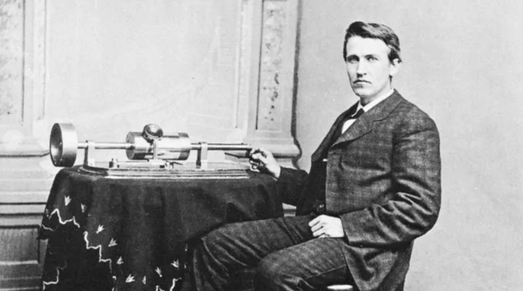
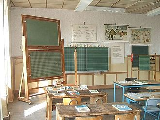
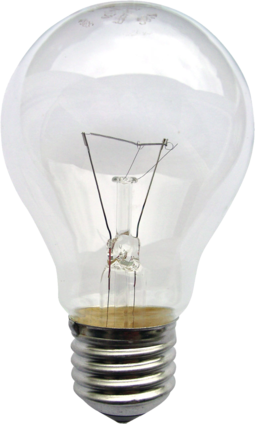

Thomas Edisson,
A Life's Lesson For All Of Us
About Him
Childhood

In 1854, Thomas Edisson moved to Huron, where he attended public shcool for a total of 12 weeks! A hyperactive child, prone to distraction, he was deemed "difficult" by his teacher...
He could stop here and think that nothing was going to happen with him and that he was a failure like the teachers told... But instead of that, his mother made the greatest job ever, she kept telling him how special he was and how much she is proud of him! Her belief in him made things to happen and in 1879 he invented... the light, that we are all using today thanks to him.
So failure or success? It depends of what you want to believe!
Achievement

There’s never been anyone like Edison with his 1,093 patents and his ‘Invention Factory’ in Menlo Park, New Jersey, where he boasted he would invent something minor every ten days and a ‘Big Trick’ every six months. Here are Edison’s ten best Big Tricks:
Phonograph, Durable light bulb, Electrical Vote Recorder Quadruplex,
Sextuplex and multiplex telegraph, Carbon microphone,
Electricity distribution system,
First commercial fluoroscope,
Stock ticker,
Kinematograph (motion picture camera),
Kinetoscope (peep hole viewer)...
From Edison story we can learn one of the most important rules: trust in yourself and in others, because that's way you could achieve things that you didn't think you were able to reach! See the good side in everyone and of course in youself too. We all have defaults, we are not perfect but our defaults make our perfection, and like Edison that became from an hyperactive child to a genius inventor, we're all able to do the same way... It's just depend on you!
To Content About Edison